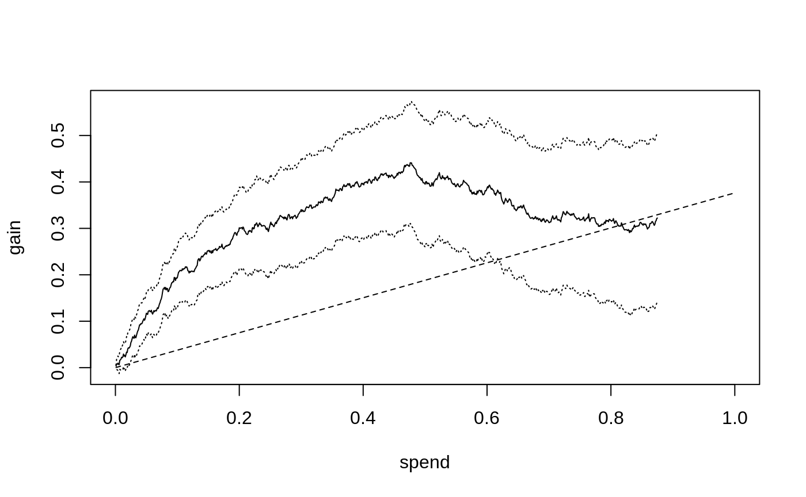
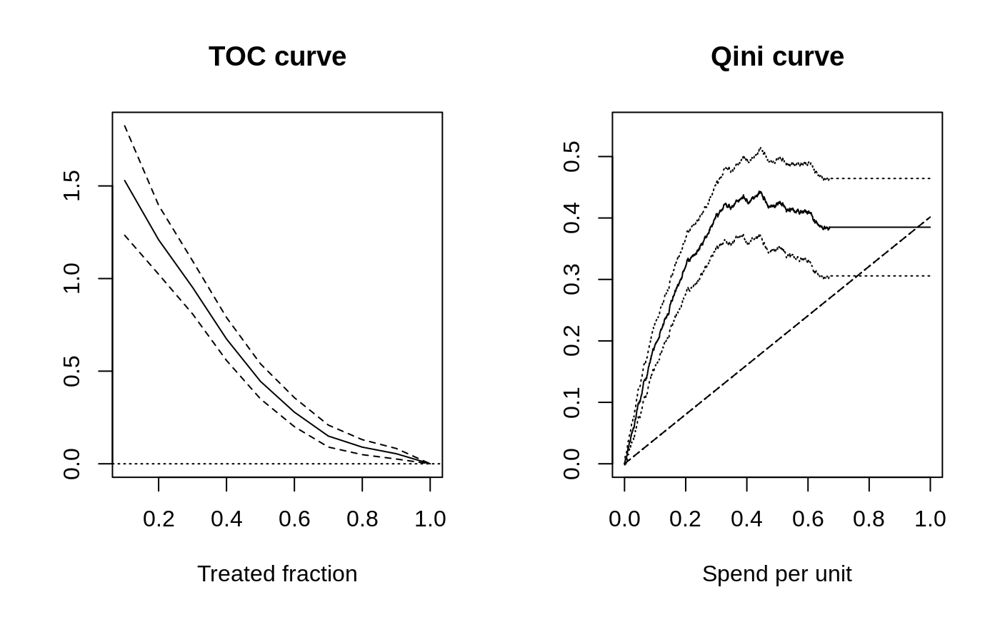
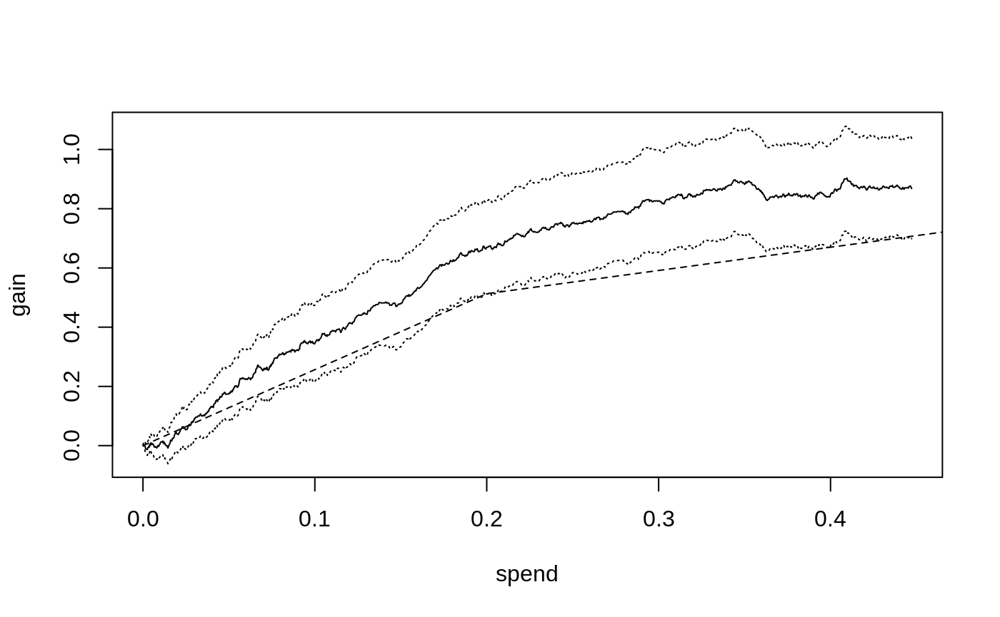
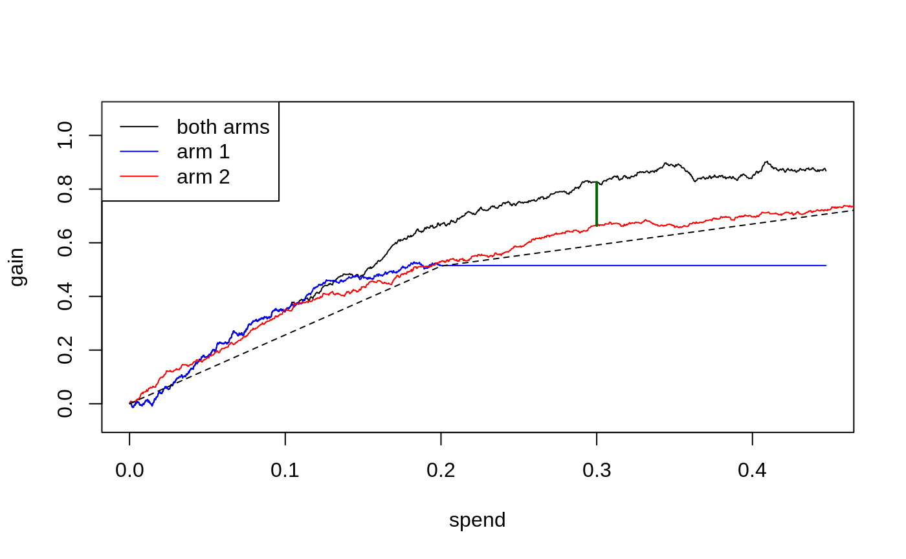
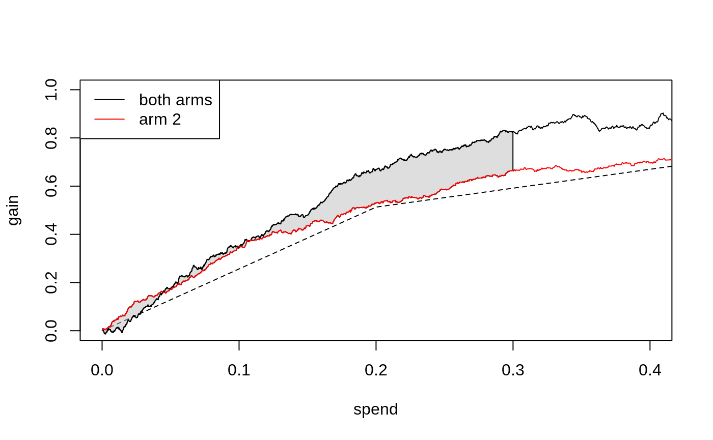

This vignette gives a brief overview of how Qini curves (or cost curves) can act as an attractive and intuitive metric for evaluating treatment rules when there are costs associated with deploying treatment, as well as how they can be generalized to many treatment arms, as implemented in the companion package maq. For complete details, we refer to this paper.
The first section of this vignette recaps evaluation metrics for treatment effect estimators. The second section introduces Qini curves for when treatment assignment has associated costs, and the third section covers how Qini curves can be generalized to multiple treatment arms.
Before jumping into Qini curves, let’s start by defining some terminology and refreshing some concepts. Consider a binary treatment assignment \(W_i = \{0, 1\}\) and some outcome of interest \(Y_i\). In order to determine if there are certain subgroups of the population, as defined by some observable characteristics \(X_i\), that benefit differently from the treatment assignment, a central object of interest is the conditional average treatment effect (CATE)
\[\tau(X_i) = E[Y_i(1) - Y_i(0) \,|\, X_i = x],\]
where \(Y(1)\) and \(Y(0)\) are potential outcomes corresponding to the two treatment states: treatment or control arm.
There are many approaches to obtain estimates of the function \(\tau(X_i)\), Causal Forest being one of them. Now, once we an estimated \(\hat \tau(\cdot)\) function, or set of functions, what metric can we use to evaluate them with? Recall that, as opposed to a classical prediction problem, we never observe ground truth treatment effects, so we cannot use a held-out test sample to compute something like a mean squared prediction error \(E[(f(X_i) - Y_i)^2]\).
A metric we propose for this purpose is called the RATE and is covered in this vignette. With RATE we take a policy evaluation approach to guide the construction of a metric: assume we have obtained an estimated CATE function \(\hat \tau(\cdot)\) on some training set and on a held-out test set \(X_{test}\) we have observed outcomes \(Y_i(W_i)\) for people who were treated, or not treated.
The estimated CATE function \(\hat \tau(\cdot)\) induces a family of policies, which we refer to as \(\hat \pi(\cdot)\), that takes covariates \(X_i\) and maps them to a treatment decision \(\{0: \text{don't treat}, 1: \text{treat}\}\). For example, on the held-out test set, the predictions \(\hat \tau(X_{test})\) implicitly tell us that a reasonable policy to determine treatment allocation with is: “If the estimated CATE for Alice is highest, then treat Alice first”, and “If the estimated CATE for Bob is the second highest, then treat Bob second”, and so on.
The policy we just described can be more aptly termed a prioritization rule. The estimated CATEs implicitly tell us how to prioritize treatment allocation on a test set by following a simple rule: First treat Alice, then Bob, and so on, in order of decreasing CATE estimates. Recall that we have access to Bob and Alice’s observed outcomes \(Y_i(W_i)\) on the test set, so we can evaluate the quality of this “predicted” policy by appropriately calculating some measure of agreement between \(\hat \tau(X_{test})\) and \(Y_i(W_i)\), i.e., do the people our CATE estimator give high priority to also have high average treatment effects as (appropriately) measured by their observed outcomes \(Y_i(W_i)\)? (for the purpose of this simple vignette we are assuming the treatment is randomly assigned, so that we can compute average treatment effects as simple differences in observed outcomes, the next section gives more detail, for complete details we refer to the papers listed in the references).
A first ingredient of RATE is to essentially take the estimated \(\hat \tau(\cdot)\), treat it as a prioritization rule, then on the test set trace out the estimated average treatment effect (ATE) of people included in the rule minus the whole sample ATE, as we descend down the rule list “Alice, Bob, etc”. We refer to this curve as the TOC curve. As mentioned in the RATE vignette this is a visually appealing way to assess how a CATE estimator (or any other scoring rule wish to employ for treatment targeting) performs on a held-out test set. A second ingredient of a RATE is then to collapse this curve to a single point estimate, via computing an area under the curve (AUC), similar to how the area under the “ROC” curve can be used to assess a binary classifier.
This approach to evaluation can essentially be summarized as follows:
The appeal of this construction is that it enables you to transparently answer questions like “Did my estimated CATE function manage to detect treatment effect heterogeneity”, or “Which of these estimated CATE functions performs best” - by conducting simple evaluation exercises on a held-out test set.
Consider now the case where assigning treatment incurs a cost, where we let \(C_i(1)\) denote the cost of assigning unit \(i\) the treatment arm (and assume that withholding treatment is costless, \(C_i(0)=0\)). An example where costs may vary by unit could be in administering vaccines: getting medicines to people who live very far away from healthcare centers is likely more costly than getting medicines to people who live close by. Costs does not have to be monetary, they could also capture something more abstract, such as negative externalities.
The question we now ask is, given a budget \(B\), what is a suitable approach to quantify the cost-benefit tradeoff of assigning treatment in accordance with our estimated CATEs? It turns out that incorporating costs into the policy evaluation framework we outlined in the previous section is straightforward - but the curve is going to capture something different than the TOC.
Recall the policy \(\hat \pi(X_i)\) is a function that maps covariates \(X_i\) to a treatment decision, \(\hat \pi(X_i) \in \{0: \text{don't treat}, 1: \text{treat}\}\). In this section, this function will depend on the budget \(B\) which we denote by the subscript \(\hat \pi_B(X_i)\). It turns out that this policy can be expressed, just as in the previous section, as a treatment prioritization rule that essentially says “If you have \(B\) available to spend, then treat Alice first if her estimated cost-benefit ratio, CATE/cost is the highest”, and so on. If Alice’s estimated CATE is negative, we would not consider treating her, as we would incur a cost, but reduce our gain.
Just as before, we have available a test set with \(n\) observed outcomes to perform evaluation on. We are interested in quantifying the expected gain (measured by the ATE) we can achieve by assigning treatment in accordance with \(\hat \pi_B\) at different spend levels \(B\).
In the previous section we left out the exact details of how to evaluate a policy. Luckily, it turns out this is simple: if we know the treatment randomization probabilities, then we can use inverse-propensity weighting (IPW) to estimate the value of the gain we achieve through averaging the difference in test set outcomes that matches our policy prescription:
\[ \frac{1}{n} \sum_{i}^{n} \hat \pi_B(X_i) \left( \frac{W_i Y_i}{P[W_i = 1|X_i]} - \frac{(1-W_i)Y_i}{P[W_i = 0|X_i]} \right). \] IPW (the terms in parenthesis) accounts for the fact that the prescribed policy \(\hat \pi_B(X_i)\) might not match the observed treatment \(W_i\) for unit i. The Qini curve traces out the above value as we vary the available budget \(B\), yielding an estimate of
\[ Q(B) = E[\pi_B(X_i) (Y_i(1) - Y_i(0))] = E[\pi_B(X_i) \tau(X_i)], \] the gain we can achieve when assigning treatment in accordance with our estimated CATEs, and costs, at various values of the budget \(B\).
The following code example gives a toy example, where we to keep the exposition simple, assume each unit has the same cost, assigning treatment to both Bob and Alice costs 1.0, on some chosen denomination (a nice property of the Qini as an evaluation metric is that it does not require costs and treatment effects to be denominated on the same scale, only their ratio matters).
n <- 2000 p <- 5 X <- matrix(rnorm(n * p), n, p) W <- rbinom(n, 1, 0.5) Y <- pmax(X[, 1], 0) * W + X[, 2] + pmin(X[, 3], 0) + rnorm(n) # 1) Train a CATE function on training set. train <- sample(n/2) c.forest <- causal_forest(X[train, ], Y[train], W[train]) # 2) Predict CATEs on test set. test <- -train tau.hat <- predict(c.forest, X[test, ])$predictions # 3) Estimate a Qini curve using inverse-propensity weighted test set outcomes. IPW.scores <- ifelse(W[test] == 1, Y[test]/0.5, -Y[test]/0.5) # Assume each unit incur the same cost. cost <- 1 # Use the maq package to fit a Qini curve, using 200 bootstrap replicates for SEs. qini <- maq(tau.hat, cost, IPW.scores, R = 200) # Form a baseline Qini curve that uses the ATE rather than the CATE to assign treatment. qini.baseline <- maq(tau.hat, cost, IPW.scores, target.with.covariates = FALSE, R = 200) plot(qini, xlim = c(0, 1)) plot(qini.baseline, add = TRUE, lty = 2, ci.args = NULL) # leave out CIs for legibility.

The solid curve shows the expected gain (y-axis) as we assign treatment to units predicted to benefit the most per unit spent, as we increase the amount we are willing to spend per unit (x-axis), along with 95 % confidence bars. The dashed line shows the Qini curve when we assign treatment without considering the CATE, i.e., at the end of this line, at which point we have exhausted the budget and given everyone the treatment, our gain is equal to the ATE of around 0.38. (So, points on the dashed-line represent the fraction of the ATE we can expect when targeting an arbitrary group of the population at different spend levels, thus it does not have to be a 45-degree line)
The solid black curve is the Qini curve that uses the estimated CATEs to predict which test set subjects have the highest treatment effect per unit spent. As this curve rises sharply above the dashed straight line that “ignores” the CATE, it suggests there is a benefit to targeting treatment to a subpopulation as implied by the estimated CATEs, that is most responsive per unit spent. This curve stops (or “plateaus”) at \(B=\) 0.88 because at that point we have assigned treatment to the units predicted to benefit, \(\hat \tau(X_i) > 0\).
We can read off estimates on the curve at various \(B\) through
average_gain(qini, spend = 0.2) #> estimate std.err #> 0.301 0.045
That is, at an average spend of \(B=0.2\) a 95% confidence interval for the average benefit per unit is 0.3 \(\pm\) 0.09. (these standard errors are conditional on the estimated function \(\hat \tau(\cdot)\) and quantify test set uncertainty in estimating the Qini curve).
Had we instead used the same amount of budget to treat an arbitrary group of the population, our estimated gain would be
average_gain(qini.baseline, spend = 0.2) #> estimate std.err #> 0.075 0.019
Note on policy evaluation: whenever IPW can solve a problem, there is generally a doubly robust method (here Augmented-IPW) that can do better in terms of statistical power. In this vignette, we’ll stick to evaluating with IPW for simplicity, but note that with GRF you could train a separate test set forest and retrieve doubly robust test set scores through the function get_scores(forest) that could be used in place of IPW.scores, yielding a doubly robust estimate of the Qini curve.
We have thus far introduced two curves that may seem to both serve a similar purpose. What’s the difference? That depends on the application. If we look closer, which of these curves is useful depends on what questions we are interested in. Below is a side-by-side illustration of what the TOC and Qini curves could look like in the case the ATE is positive, but there are subgroups of people with both positive and negative treatment effects (the dashed line in the Qini plot represent the ATE). 
The TOC compares an average treatment effect over the quantiles of some scoring rule to the overall average treatment effect. The Qini curve quantifies an average treatment effect per unit as we vary a budget constraint on spend per unit.
So: The TOC curve is useful if you are in a setting where you are interested in whether there is a group of people that benefit more than average from being treated. If costs are not directly relevant, and you are more interested in detecting the presence of heterogeneity, then the TOC is helpful because it clearly reveals the quantile where targeting helps. The TOC thus serves as a general tool for measuring heterogeneity.
The Qini curve is useful if you are in a setting where it is natural to undertake some cost-benefit analysis. The Qini curve is helpful because it clearly reveals the expected gain you can achieve by targeting the most responsive units, per spend, at various levels of budget allocations available. Another benefit of the Qini curve is that it is also more natural to be extended to many treatment arms, as the cost element carries over a similar cost-benefit tradeoff, but now across both arms and units.
Note on constant costs: For a single treatment arm, when each unit has the same cost \(C_i(X_i) = 1\), we can also interpret the x-axis on the Qini curve plot above as the treated fraction.
Consider now the case where we have \(k = 0,\ldots K\) arms available, where \(k=0\) is a zero cost control arm. For example, \(k=1\) could be a low cost drug, and \(k=2\) could be a higher cost drug, but which is more effective (and \(k=0\) could be a placebo control).
Given estimated treatment effects \(\hat \tau(\cdot)\), and costs \(C(\cdot)\) (remember that these objects are now vector-valued, i.e. the \(k\)-th element of \(\hat \tau(X_i)\) is an estimate of the CATE for arm \(k\) for units with covariates \(X_i\)1) - we now ask: how can we conduct a similar exercise as above where we evaluate allocating treatment optimally in accordance with our estimated CATEs (and costs), as we vary the available budget?
It turns out that in order to perform this exercise, we need to solve a constrained optimization problem, as the underlying policy object \(\hat \pi_B(X_i)\) now has to optimally select among many potential arms (with different costs) for each unit. For example, at each spend level, we have to decide whether we should allocate some initial arm to Alice, or perhaps, if Bob was already assigned an arm, if we instead should upgrade Bob to a costlier, but more effective arm.
The maq package performs this exercise efficiently (by computing a solution path via a tailored algorithm), and we’ll here jump straight into a toy example with 2 treatment arms and a control. We are simulating a simple example where one treatment arm (number 2) is more effective on average but costlier. We are imagining the cost of assigning any unit to the first arm is 0.2 (on some chosen denomination), and the cost of assigning each unit to the second arm is 0.5 (costs could also vary by units based on some known characteristics, in which case we could supply a matrix as the cost argument below).
# Simulate two treatment arms (1 and 2) and a control arm 0. n <- 3000 p <- 5 X <- matrix(runif(n * p), n, p) W <- as.factor(sample(c("0", "1", "2"), n, replace = TRUE)) Y <- X[, 1] + X[, 2] * (W == "1") + 1.5 * X[, 3] * (W == "2") + rnorm(n) # 1) Train a CATE function on training set. train <- sample(n/2) c.forest <- multi_arm_causal_forest(X[train, ], Y[train], W[train]) # 2) Predict CATEs on test set. test <- -train tau.hat <- predict(c.forest, X[test, ], drop = TRUE)$predictions # 3) Form a multi-armed Qini curve based on IPW (convenience function part of `maq`). IPW.scores <- get_ipw_scores(Y[test], W[test]) # The cost of arm 1 and 2. cost <- c(0.2, 0.5) # A Qini curve for a multi-armed policy. ma.qini <- maq(tau.hat, cost, IPW.scores, R = 200) # A "baseline" Qini curve that ignores covariates. ma.qini.baseline <- maq(tau.hat, cost, IPW.scores, target.with.covariates = FALSE, R = 200)
The Qini curves for a multi-armed policy looks like

The dashed line represents a Qini curve that allocates treatment to arms based only on the averages of tau.hat. This curve has a kink at \(B=0.2\): the first segment traces out the ATE of the lower cost arm, and the second segment the ATE of the higher cost but on the average more effective arm. Points on this curve represent the average benefit per unit when targeting an arbitrary group of units2.
The solid line shows the estimated Qini curve for a policy that uses tau.hat and cost to assign the treatment arm to the unit that is predicted to be most cost-beneficial at a given spend. We can assess the value of targeting with both arms over randomly assigning treatment by estimating the difference between the dashed and solid lines. For example, at \(B=0.3\), this vertical distance is
difference_gain(ma.qini, ma.qini.baseline, spend = 0.3) #> estimate std.err #> 0.23 0.05
We can retrieve an estimate of the underlying multi-armed policy \(\pi_B\) through predict, for example at \(B=0.3\)
pi.hat <- predict(ma.qini, spend = 0.3) head(pi.hat) #> [,1] [,2] #> [1,] 1 0 #> [2,] 1 0 #> [3,] 1 0 #> [4,] 1 0 #> [5,] 0 1 #> [6,] 0 0
\(\pi_B(X_i)\) is now a \(K\)-dimensional vector, i.e. the \(i\)-th row above has a 1 in the \(k\)-th column if we at that spend level assign arm \(k\) to that unit, with all entries zero if the control arm is assigned.3
We can also compare with single-armed treatment policies by computing Qini curves for each arm.
qini.arm1 <- maq(tau.hat[, 1], cost[1], IPW.scores[, 1], R = 200) qini.arm2 <- maq(tau.hat[, 2], cost[2], IPW.scores[, 2], R = 200) plot(ma.qini, ci.args = NULL) # leave out CIs for legibility. plot(qini.arm1, add = TRUE, col = "blue", ci.args = NULL) plot(qini.arm2, add = TRUE, col = "red", ci.args = NULL) plot(ma.qini.baseline, add = TRUE, lty = 2, ci.args = NULL) legend("topleft", c("both arms", "arm 1", "arm 2"), col = c("black", "blue", "red"), lty = 1)

The blue line (arm 1) plateaus at a spend level of around 0.2, since once we have reached this spend level, we are already giving treatment to all units believed to benefit from arm 1 (i.e. \(\hat \tau_1(X_i) > 0\)), and so cannot achieve further gains via increased spending.
Qini curves for single-armed treatment rules can help assessing the value of targeting with a specific arm or targeting function. The multi-armed Qini generalization allows us to answer questions such as “For a specific spend level, what is the estimated increase in gain when optimally targeting with both arms as opposed to using only a single arm?”. Let’s call \(\hat Q(B)\) the estimated Qini curve for the multi-armed policy and \(\hat Q_2(B)\) the estimated Qini curve for arm 2. At \(B = 0.3\), the difference \(\hat Q(B) - \hat Q_2(B)\) (illustrated by the green vertical line in the above plot) is
difference_gain(ma.qini, qini.arm2, spend = 0.3) #> estimate std.err #> 0.161 0.075
In this example, a multi-armed policy achieves a larger gain than the arm 1 policy by assigning the treatment that is most cost-beneficial to each test set unit (points on arbitrary curves can be compared with this function, yielding paired standard errors that account for the correlation between Qini curves fit on the same test data).
We can also compare different targeting strategies across a range of spend levels. The function integrated_difference estimates an area between two Qini curves. An estimate of the shaded area below (the integral \(\int_{0}^{0.3} \left(Q(B) - Q_2(B)\right)dB\))

is given by
integrated_difference(ma.qini, qini.arm2, spend = 0.3) #> estimate std.err #> 0.015 0.057
Sverdrup, Erik, Han Wu, Susan Athey, and Stefan Wager. Qini Curves for Multi-Armed Treatment Rules. arXiv preprint arXiv:2306.11979 (arxiv)
Yadlowsky, Steve, Scott Fleming, Nigam Shah, Emma Brunskill, and Stefan Wager. Evaluating Treatment Prioritization Rules via Rank-Weighted Average Treatment Effects. arXiv preprint arXiv:2111.07966 (arxiv)
There are many approaches to estimating CATEs in the single-armed setting that can be adopted in the multi-armed case by simply fitting separate CATE functions for the different treatment arms. In this vignette, we use GRF’s multi_arm_causal_forest, which jointly estimates treatment effects for the arms.↩︎
With many treatment arms, this “baseline” arm allocation is going to trace out the upper left convex hull on the “average” cost and \(\hat \tau(X_i)\) plane.↩︎
Note that at most one unit will have a non-integer entry in this row matrix. If the particular budget is not enough to give the final \(i\)-th unit a treatment, then this unit will either have a single fractional entry, or two fractional entries, depending on whether the unit is being assigned an initial arm or upgraded to a costlier arm. These fractions can be interpreted as a probability of arm assignment.↩︎